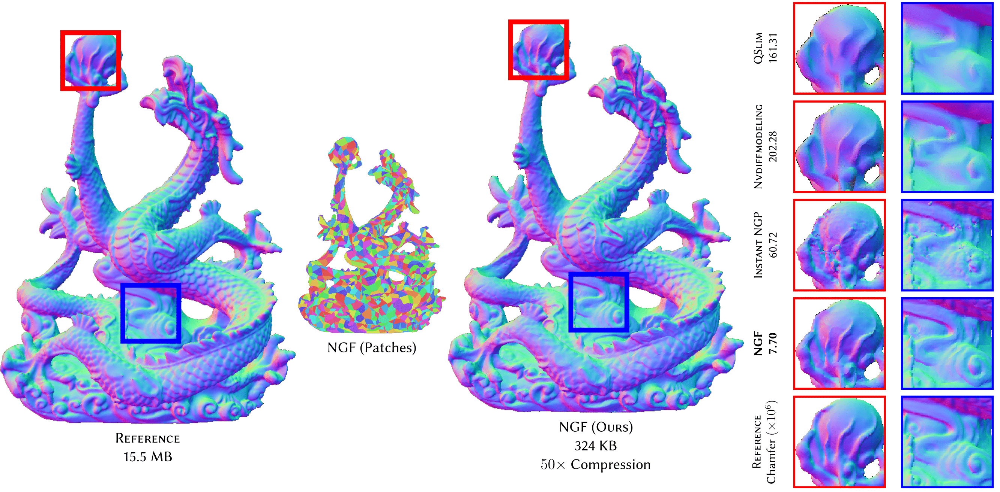

ACM SIGGRAPH 2024 · Conference Track
ACM SIGGRAPH 2024 · Conference TrackACM SIGGRAPH 2024 · Conference Track
Paper · Supplementary · Slides · Code · BibTeX

Recent work on using neural fields to represent surfaces has resulted in significant improvements in representational capability and computational efficiency. However, to our knowledge, most existing work has focused on implicit representations such as signed distance fields or volumes, and little work has explored their application to discrete surface geometry, i.e., 3D meshes, limiting the applicability of neural surface representations.
We present Neural Geometry Fields, a neural representation for discrete surface geometry represented by triangle meshes. Our idea is to represent the target surface using a coarse set of quadrangular patches, and add surface details using coordinate neural networks by displacing the patches. We then extract a traditional triangular mesh from a neural geometry field instance by sampling the displacement. We show that our representation excels in mesh compression, where it significantly reduces the memory footprint of meshes without compromising on surface details.
@inproceedings{10.1145/3641519.3657399,
author = {Edavamadathil Sivaram, Venkataram and Li, Tzu-Mao and Ramamoorthi, Ravi},
title = {Neural Geometry Fields For Meshes},
year = {2024},
isbn = {9798400705250},
publisher = {Association for Computing Machinery},
address = {New York, NY, USA},
url = {https://doi.org/10.1145/3641519.3657399},
doi = {10.1145/3641519.3657399},
booktitle = {ACM SIGGRAPH 2024 Conference Papers},
articleno = {29},
numpages = {11},
keywords = {Neural representation, mesh compression, mesh simplification},
series = {SIGGRAPH '24}
}